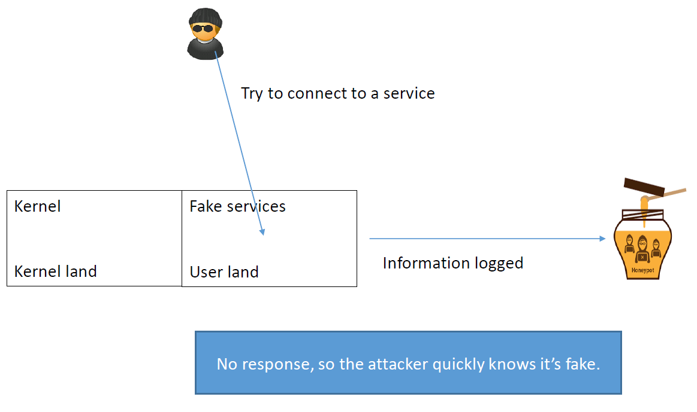
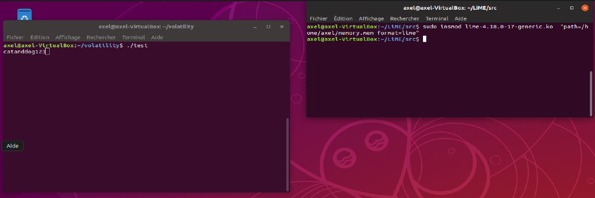
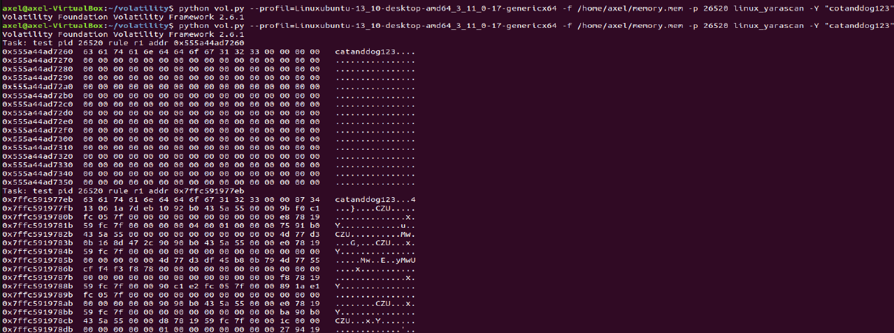
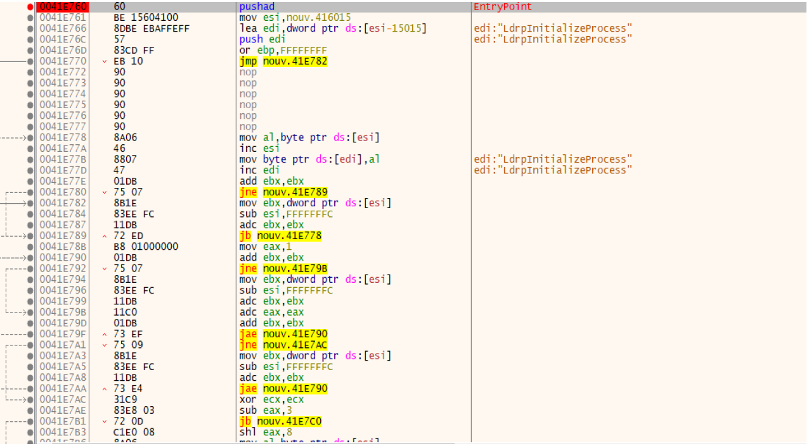
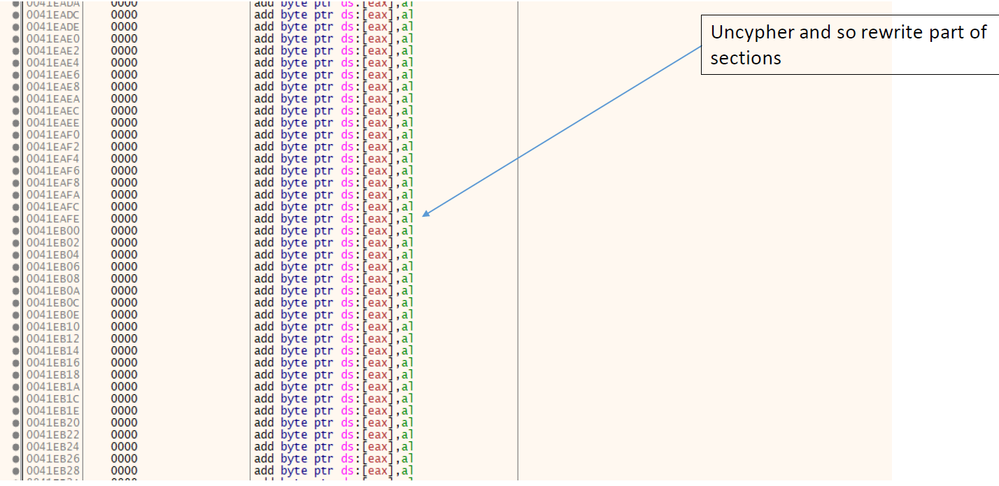
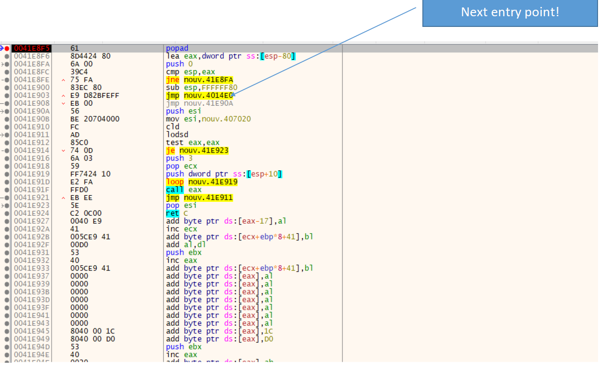
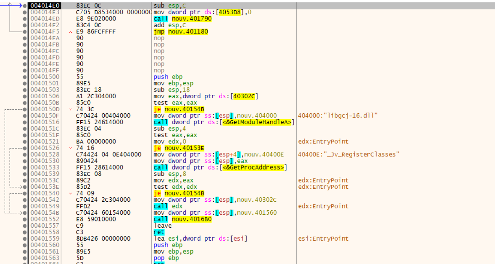

Malware Analysis¶
Introduction¶
What is a malware ?¶
Malware is a piece of code which changes the behavior of either the operating system kernel or some security sensitive applications, without a user consent and in such a way that it is then impossible to detect those changes using a documented features of the operating system or the application (e.g. API). [1]
Vector/Surface of attack¶
- With consent: for example, using teamviewer for technical support. In this case you gave your consent to someone to get full access to your computer. I let you enter, but does not mean you can install any type of code on my system ! (insiders). Another case is when you download your self a bad stuff.
- Without consent: for example, again using teamviewer, an attacker could use it to maliciously take control of your computer. For example finding at vulnerability in protocol to do malicious things without the user “consent”.
- Here we have an example of Potentially Unwanted Application (PUA). The more you let access to your computer the more you give your consent.
Malware classification (sample)¶
Malware classification  General traits of the malware, it
is useful to provide an overall description of malware’s behaviour and
to catch them with honeypot. It also help to characterize its
signature which is what identified the malware and hence is useful
to detect new one.
General traits of the malware, it
is useful to provide an overall description of malware’s behaviour and
to catch them with honeypot. It also help to characterize its
signature which is what identified the malware and hence is useful
to detect new one.
- Worm/Virus: “a contagious piece of code that infects the other software on the host system and spreads itself once it is run. It is mostly known to spread when software is shared between computers. This acts more like a parasite”. A virus is a specific type of malware that spread and replicates. Malware are more general: “any expected/unwanted behavior”. Most of Anti Viruses are anti malware.
- Spyware: give information about what the victim is doing, collect information and send it, classical: keyloggers. (E.g keylogger)
- Bot(Net): can be use as computer power (E.g mirai botnet), same as backdoor, but all botnet infected with the same malware are controlled by a command and control server (C&C).
- Backdoor: install itself onto a computer to allow the attacker access
- (Down)Loader: load some file to prepare an attack, (E.g loading spyware)
- Ransomware: encrypt data of the victim and promise decryption in exchange of ransom.
- Spam sending: use the machine to send spam (that may contain infected behaviors)
- Scareware: scare the user to make him/her buying something (e.g sexual scare)
- Rootkit: code used to conceal existence of to her code
- …
Some famous malware¶
| Creeper |
|
| Michelangelo |
|
| I Love You |
|
| MyDoom.A |
|
| StuxNet |
|
| CryptoLocker |
|
 Situation
Situation
- More and more complex
- With specific targets
- With specific damages
- Two examples: Wannacry and Mirai
- … Sadly, Coronavirus illustrates the problem
| WannaCry |
|
| Coronavirus |
|
Malware analysis: Steps¶
- Malware is noticed by someone/ something
- Analyst examines sample and confirms it’s malware
- Analyst write a signatur e for the malware
- Anti malware engines receive the rule and update themselves
- Malware now detected and stopped
| [1] | https://blog.invisiblethings.org/papers/2006/rutkowska_malware_taxonomy.pdf |
| [2] | https://www.pcworld.com/article/2082204/crime-pays-very-well-cryptolocker-grosses-up-to-30-million-in-ransom.html |
Case Study: Mirai¶
Preamble: Denial of Service (DoS)¶
A Denial of Service (DoS) attack aims at preventing a target from providing its service.
- Most common: attack a server to take down a website
- If server detects the attack, it can “blacklist” the attacker, i.e. ignore all packets coming from the attacker
- Solution: Attack from a lot of IPs → Distributed Dos (DDoS)
How to DDos¶
- Attacker infects lots of devices (called zombies or bots)
- Zombies await for commands from a Command & Control (C&C) server
- To DDoS attack, the C&C server orders all zombies to flood the victim with requests
- Zombies can use amplification techniques to increase attack size (e.g DNS amplification)
- Very hard to know who to blacklist!
The Mirai botnet trojan¶
- Where do you find a lot of Internet connected, low security devices?
- In the Internet of Things! (IoT ) almost zero security! Mirai is a botnet trojan infecting IoT devices (targets Linux, mostly CCTVs and DVRs)
Mirai botnet: timeline¶
20th-22nd September 2016:
- 620 Gbps DDoS to KrebsOnSecurity using 120k devices.
- 1 Tbps DDoS to French hosting OVH using 150k devices
“According to Akamai, it was nearly double the size of the largest attack they’d seen previously, and was among the biggest assaults the internet has ever witnessed”
30th September 2016: Mirai author Anna-senpai releases source code hoping to divert attention (did not work, authors pleaded guilty on Dec 2017)
How does it work ?¶
Vulnerable IoT devices exposed in the Internet are scanned
Botnet malware is installed on the IoT devices that use common password (63 are tried in)
- IoT device connects connect to C&CReceive a payload that corresponds to their architecture
- Awaits instructions from the C&CExample: please perform a DDOS attack on victim X
Mirai in the wild¶
Remember: source code has been released
- Different Mirai versions notion of family
- Different servers and IP that are scanned (XOR domain), or
- Different C&C → different version
Mirai trojan: infective behavior¶
The Mirai trojan bot is the core of the botnet:
- Deletes itself from disk hard to detect
- Modifies its process name into a random string
- Kills all processes listening on TCP ports 22 (SSH), 23 (Telnet), 80 (HTTP)
- Generates random IPs to scan avoiding dangerous subnets e.g. NSA
- Attempts to login with 60 default username/password pairs (not very complicated one in this case)
- Signals vulnerable IPs and credentials to Mirai server
- Finally, the bot waits for instructions from C&C server
How to obtain malware sample ? The honey pot approach¶
Catching malware samples¶
Honeypots¶
A honeypot is a system that is intentionally left vulnerable to catch attacks and malware and study their behavior. The honeypot records the behavior of the attacker and saves all the files dropped to an external location, then reflashes itself. Idea attributed to Bill Cheswick , played with a pirate who was exploiting a vulnerability in the sendmail daemon (1991).
Objectives¶
Let the attacker believe that she can control the system. This allows the administrator to observe what the attacker uses to compromise the system.
- Spies the network
- Collect informations
- Analyse information
Different level of control: weak , middle and strong interactions.
Weak interactionsEmulate services, but offer no response. Allows us to perform statistic:
- Which port is under attack?
- Which malware (in case information is in first packet)?
Example:netcatthat listen to a port and log all commands sent by attacker.Others: honeytrap
- Middle interactions Problem with weak interaction: no response.Solution: Middle interaction:
- respond with what the attacker expects (emulates a dedicated service)
- She trusts it and send more

- Payload is analyzed in a virtual machine (not always easy to put in place!)
Example:
nepenthes- Web server IIS with webdav known to be vulnerable to buffer overflow (2003)
- Implement fake version that let the attacker exploit the vulnerability
- In case attacker exploits vulnerability, emulate a virtual machine to analyse the content
- Strong interactions Middle interaction problem: it is not difficult to detect if we are in a virtual environment.Solution: Let the attacker to have access to the full system
- Allows us to discover new attacks
- More dangerous as the full system is vulnerable
- But very useful to detect new types of attacks
Some great tutorial:¶
Some honey pots¶
Dionaea: against worms, effective for WannaCry
The case of Mirai¶
The Mirai flow of attack is known.
- What we hunt: the code deployed depending on the architecture
- Objective: to catch different versions to study variants of the malware
- To generate different malware signatures! (or even to predict new ones)
Again, the interesting part is the code that is deployed. We do not need to let the code be executed, just catch it!
- Conclusion: A middle interaction honeypot is sufficient
The Cowrie honey pot can be used to emulates an ARM IoT device. We assume that this device accepts all connections attempts and store any attempt to load a file into the honey pot.
How to catch a Mirai¶
- Bot scan How do you recognize when an attack comes from a Mirai bot?Connects to port 23 (Telnet), tries to login with hardcoded usernames and passwords, if successful runs the following commands:If the commands above succeed, a Mirai server will contact you next.
busyboxis file that emulate many version of linux.
- C&C server attackThe Mirai server will connect with the same credentials and execute:
It try to have information about the mounted system since it try to inject the mirai payload but the only way to do this is to write something in you.
Server attack Each mounted file system <DIR> found is tested for writability by trying to write a file on it and see if its content matches:
echo -e '\\x6b\\x61\\x6d \\x69 <DIR>'> <./nippon/busybox cat> <DIR>/.nippon/busybox rm <DIR>/.nipponIf it finds a writable <DIR> it moves to it and analyzes
/bin/echoand/proc/cpuinfoto determine the CPU architecture (to adapt and know if victim is good candidate):cd <DIR> /busybox cp /bin/echo dvrHelper dvrHelper /busybox chmod 777 > dvrHelper /busybox ECCHI cat /proc/ cpuinfo
Finally, the Mirai server uses
wgetortftpto download and execute the Mirai downloader for the correct architecture. The downloader downloads and executes the Mirai bot for the correct architecture …so your honeypot will record all the instructions executed by Mirai bot, server, and downloader, and samples of the downloader and bot, and save all of them somewhere for further analysis. Then the honeypot with reflash itself to disinfect itself. That’s how you collect malware samples and make sure it’s Mirai.
From observation to analysis and detection¶
- Honeypots are there to spy, collect, analyse
- They lure the attacker
- They are not intrusion detection systems/anti-virus (study, no reaction)
- Indeed, its up to you to decide if honeypot content correspond to a malicious action
- This information can be used to feed a malware analysis system
Malware Analysis¶
Objective: Classification of an executable binary as clean or malicious (+ malware type/family if possible)
- Always the same principle:
- Characterize the malwares you know with signatures
- Try to detect it in new files under analyses.
- Detection process leads to several types of analysis
- First one: static analysis (read content of the file)
- The signature is a (combination of) string(s) + static properties (features)
Static Analysis¶
Example¶
int malicious_behavior() {
printf("I am evil!!!\n");
}
int main(int argc , char argv) {
malicious_behavior();
}
Static Analysis: Signatures are sequences of strings¶
- Principle: look for relevant strings in the binary ( that’s your signature
- How do the signatures look like?
- composed of characteristic strings extracted from the malware
- other property that can be quickly verified without executing, e.g., hash and size
- How do we extract the signature from a binary?
- major challenge, but when you’ve it you’re happy!
- avoid false positive, false negative
- Before talking about the extraction, let us see what we can do when we have it!
Static Analysis: processing new files¶
- Challenge: How to detect a potential new malware M1?
- Solution:
- Compile all signatures of known malwares in a regular expression (classification)
- and scan the binary of M1 to see if any part matches (detection)
- This is a Pattern matching approach (remember your translator class!)
- It is mostly performed via automata:
- Turn regular expression into automaton
- Walk M1 file in the automaton and check if you reach an accepting state
- A well known tool:
YARA
Malware detection static via YARA¶
Yara IS:
- Elegant way to specify any type of regular expression
- Fast and efficient at detection
- Look for syntactic properties of file
- Does not execute the sample during analysis (i.e. static)
- Plugins to python and other languages
- Protections against REGEX attacks
- Remember : Regular expression are turned into automaton
- If automaton is deterministic then one path
- If automaton is non deterministic which arises for complex regular expressions), then exponential number of paths
- Example:
- regular expression:
[a-z]+@[a-z]+([a-z \.]+.]+\.)+[a-z]+for mail
- regular expression:
Yara IS NOT:
- a virus scanner (but act very similar to existing anti virus)
- a correlation engine
- a bayesian classifier
- Or more generally: an artificial intelligence
Rules can be very complex, but can be written in a very effective manner [3]
rule 2018ISOLLATutorialYaraSimpler {
meta:
description = "Simpler Yara rule for ISOLA 2018"
strings:
$evil_string = "i am evil" wide ascii
condition:
$evil_string
}
Main difficulty: how to write good (effective) YARA rules? I.e. How to identify and extract malicious knowledge from a known database?
Things to avoid:
- Rules that generate many false positives and
- Rules that match only the specific sample and are not much better than a hashvalue.
Solutions:
Comparison with cleanware database (reduce false positive
Happens when the rule claims it is a malware, but it is
not)- Take a huge database of cleanware
- Take a malware
- Create a rule with strings that are specific to malware, and not present (or almost not present) in the cleanware
May generate plenty of strings
- Take the x best ones
- Best has to be defined.
yarGen: Keep strings that are likely to not be in goodware.Avoid false positive: Do not claim it is a malware if it notDanger:- Rules may become too specific
- Strings that were present in the sample used as malware may not be part of the malware
- And hence not present in another iteration of the same malware
- Consequence: no detection!
Example https://www.nextron-systems.com/2015/02/16/write-simple-sound-yara-rules/ (ToREAD)
- Good practice (avoid false negative, less specific)Best practice by Florian Roth:
- Very specific strings ($s) s) hard indicators
for a malicious sampleEx: typos: „ Micorsoft Corportation “ instead of „Microsoft Corporation“ and Monnitor “ instead of „
Rare strings
likely that they do not appear in
goodware samples, but possibleStrings that look common
(Optional) e.g. yarGen
output strings that do not seem to be specific but didn’t
appear in the goodware string databaseQuestion? How to rank the importance of the strings in the rules?
Automatized in a tool: yarGen¶
Author: Florian Roth
Repository: https://github.com/Neo23x0/yarGen
Purpose: automatic creation of YARA rules
« The main principle is the creation of YARA rules from strings found in malware files while removing all strings that also appear in goodware files. »
Process¶

Static Analysis: Syntactic Pattern Matching: Obfuscation¶
https://hal.inria.fr/hal-01964222/file/main.pdf (ToRead)
int malicious_behavior() {
printf("I am");
printf(" evil!!!\n");
}
int main(int argc , char argv) {
malicious_behavior();
}
- Easy to obfuscate, just split the strings in the code… with
strncatandstrcpy - More advanced technique: encoding (byte code, xor + key)
char * keystream = "ISOLA - TUTORIAL -2018 ";
char * obf = "\x00\x73\x2e\x21\x61\x48\x22\x3c\x38\x6e \x73\x68\x4b";
char * xor(char * str) {
int i;
char *cipherstr;
int len = strlen(keystream);
cipherstr = malloc(len * sizeof(char));
for (i = 0; i < len ; i ++) {
cipherstr[i] = str [i] ^ keystream[i];
if(cipherstr[i] == ’\n’) {
cipherstr[i + 1] = ’\0’;
break;
}
}
return cipherstr;
}
Problem: Packing Detection¶
- Code gets compressed/encrypted and only decrypted at runtime (possibly one piece at the time)

- Very effective against any static technique: as hard as breaking encryption
- Difficulties:
- Hard to know if the program is packed
- And by who necessary to unpack
- Solution: To unpack we need to know which technique was used.
- YARA
Import r2;
rule UPX {
strings: $upx = "UPX"
condition:
r2.section("UPX0","") and r2.section("UPX1","") and $upx
}
Machine learning: we use signature based Machine Learning classification
training:
- Extract relevant features from binaries
- Link features to pack/unpack informations + name of packer (if possible, Based on your knowledge)
- Create a ground truth for training ML classifiers (test several algorithms, Generalization step.)
testing:
Use the result to decide if a file is packed
- Efficiency is very important, two questions: Packed or unpacked? Packed by who?
What is a feature ?
| Static features: | Dynamic features: |
|---|---|
|
|
Packing Detection: Ground Truth¶
ML techniques are as good as the data used to train them. Binaries are chosen for ground truth by combining:
| Hash based Proprietary analyzer | Static signatures | Proprietary tools |
|---|---|---|
|
|
Often done with manual experience and hash based |
//Experimental file packed by us:
//Not known to the proprietary tool
"./tests/binary1": {
"PROPRIETARY_TOOL": Unpacked ,
"YARA_SIGNATURE": TheMida v1.802
"PEID_SIGNATURE": TheMida v1.8
}
//Packed with modified NSIS:
//Not know to static signatures
"./tests/binary2": {
"PROPRIETARY_TOOL": NSIS,
"YARA_SIGNATURE": Unpacked
"PEID_SIGNATURE": Unpacked
}
//Consensus on UPX:
//Added to the ground truth
"./tests/binary3": {
"PROPRIETARY_TOOL": UPX,
"YARA_SIGNATURE": UPX
"PEID_SIGNATURE": UPX
}

Packing Detection: ML Classifiers¶
We test ML classifiers of various complexity:
- Naive Bayesian Classifier : performs Bayesian hypothesis testing assuming independence of features
- Decision Tree : determines order of feature testing based on greedy entropy minimization
- Random Forest : uses majority voting on multiple Decision Trees to avoid local maxima
- Nearest Neighbors : clusters similar elements according to a distance metric
- …
Algorithms are evaluated on:
- Effectiveness (by F-score)
- Training time
- Classification time
Packing Detection: Preliminary Results¶
Preliminary results on ML classifiers tested:

- Database of 160k unpacked and 40k packed PE files
- Used 80% of database for training, 20% for testing
- All classifiers are very effective (even simple ones)
- Decision tree is very cost effective
- Decide classifier to use according to available time
Preliminary results on most relevant features: [4]

- Specific bytes after entry point
- Presence of non standard sections
- Use of rarely used system calls
| Situation |
Next |
|---|---|
|
|
| [3] | https://yara.readthedocs.io/en/stable/ |
| [4] | * computed as mean decrease impurity on tree based algorithms |
Dynamic Analysis¶
Principle: execute the binary, analyze the memory looking for malicious behavior (in our case, “I am evil!”)
- Works for
strcpy("i am ");strncat(a, " evil ");printf(a) - Does not work for
printf("i am "); printf(" evil ")

How do we look for the signature in a binary?
- The binary is executed in a virtualized environment.
- The memory is dumped at various times during execution, and
- Search for the signature in the dump.
 special flags. Observing malwares at runtime allows for new
perspectives.
special flags. Observing malwares at runtime allows for new
perspectives.- Any type of observable behavior
- Example: A sequence of logs (hock the logs)
- Very important, e.g., in case of packing strings are obfuscated
Main difficulty: make sure that the malware does not know it is observed!
Dynamic Analysis: virtualized environment¶
Complexity: high
- Requires setting up and maintaining the emulation of a realistic environment
- Each file analysis requires time to execute the sample plus time to reflash and restart virtualized environment
Tools/software¶
- Sandboxes: Cuckoo, VirusTotal , sandboxie
- Virtual machines: VirtualBox, …
- Native hypervisors
LiMe, fmem,
HBGary, …Volatility (works with
python, embeds dynamic version of YARA)Computer system : abstract architecture¶
Sandbox¶
- Everything installed stays inside
- Cannot be viewed from external world
- Not saved when application exits
- Hock calls, observe, …
- Time out after some time
Limits
- Does not analyze malware if it requires command line arguments or packets from C&C server
- Sleep and similar operations can timeout analysis
- Multi file malware (e.g. with DLLs) not analyzed
- May have incorrect environment e.g. OS type
- Analysis result may be hard to understand
Virtual machines¶

Limits
Not lightweight
Reconstitute a computer within a computer
Can still be detected
- Other solutions: hypervisor (beyond this introduction)
Am I in a VM ?
int hv_bit(){
int cpu_feats=0;
__asm__ volatile (" cpuid "
: "=c" ( cpu_feats ) // output : ecx or rcx -> cpu_feat
: "a" (1)); // input : 1 -> eax or rax
return ( cpu_feats >> 31) & 1;
}
Summary¶
- Dynamic analysis forces to execute the malware, this goes beyond static analysis
- But may requires more sophisticated deployments
- Unfortunately: all virtual environments can be detected and evaded
- When a malware is executed, one can get information with memory dump
What is memory forensics ?¶
- Data are stored in either main memory unit or auxiliary memory unit
- RAM (Random Access Memory) is the main memory unit
- It retrieves the programs or data from the auxiliary memory unit
- It temporarily stores the information until the power is turned off.
“Memory forensics is forensic analysis of a computer’s memory dump. Its primary application is investigation of advanced computer attacks which are stealthy enough to avoid leaving data on the computer’s hard drive. Consequently, the memory (RAM) must be analyzed for forensic information. [From Wikipedia]”
There are at least two main reasons to observe the physical memory:
- Contains data related to the real time execution of the system
- Currently mounter file system
- List of active processes, connections, …
- Encrypted data are generally decrypted before being used
- Password is now visible, …
- Code is unpacked before being executed
Memory dump and memory profil¶
- Main difficulty: organisation of memory depends of architecture and kernel symbols
- This information is called the memory profil (can be created from distribution)
- When dumping memory it is of interest to specify the memory profil
- If it is unknown , we obtain a “raw” memory dump
- In this case, tools exists to identify the dump (but they are not perfect)”
- Dumping memory is not hard
- Retrieving informations from dump requires to know the profil
- Identifying profil is thus crucial
- This class does not aim to investiguate the shape of memory
- However, students need to understand that there is no tool able to handle all memory shape and all architecture
Sample of tools to dump memory (Linux)¶
LiME |
dd command |
|---|---|
|
|
Lime: Illustration¶
- The following command:
sudo insmod lime 4.18.0 17 generic.ko "path=/home/axel/memory.mem format=lime"Creates a lime format copy of the RAM and write it into/home/ memory.mem Observe that lime
4.18.0-17-generic.kois the lime module directly identified by Lime during installation on your distribution! (LiMe version directly link to you kernel distribution version because it need to keep the structure of you memory!)It actually depends on the memory
System.mapin/bootdirectory!To clean up:
rrmod lime
Sample of tools to dump memory (Windows)¶
Dumpit |
OllyDBG and LordPE |
|---|---|
|
|
Sample of tools to dump memory (disassembler)¶
GDBdump binary memory result.bin 0x200000000 0x20000c350
x64dbg
- Scylla Plugin
IDA, RADARE,…
The volatility framework¶
Introduction¶
python.- List of processes
- connections
- Dump process from memory for finer analysis
- Process organization structure
- Command link to process
- Yara (pattern matching inside
- Malfind (detect known)
- …
Supports¶
Volatility Framework support (taken from their website):
- memory dumps from all major 32 and 64 bit Windows
- Linux memory dumps in raw or LiME format and include 35+ plugins for analyzing 32 and 64 bit Linux kernels from 2.6.11 3.16 and distributions such as Debian, Ubuntu, OpenSuSE , Fedora, CentOS, and Mandrake
- 38 versions of Mac OSX memory dumps from 10.5 to 10.9.4 Mavericks, both 32 and 64 bit. Android phones with ARM processors are also supported
But is is likely that you’ll have to create your own profile (especially for Linux)
Profile creation (linux)¶
.dwarf) and debug
symbols (.map)- it is used to locate critical information inside the memory dump
- Hence to understand the structure of the memory.
It’s imperative that the profile is created on the same machine to be analyzed. Indeed, kernel data structure and debug symbols are specific to distribution and kernel used.
Create the kernel data structure
Use
dwarffor debugging informationaxel@axel-VirtualBox:~/volatility/linux lsinfo kcore Makefile Makefile.enterprise module.c module.dwarf
Get the kernel symbols of the current kernel
tells Volatility how are memory analysis snapshot structured
axel@axel VirtualBox :~ ls /boot/System*/boot/System.map-4.18.0-16-generic /boot/System.map-4.18.0-17-generic
Archive the profile
- in
/volatility/volatility/plugins/linux zip nomprofil.zip /boot/System.map-4.18.0-17-generic/volatility /linux.module.dwarf
- in
Quick usage illustration¶
- Command line:
python vol.py (--profil=profiltodefine) -f file (-p processnumber) command To know the list of available profiles:
python vol.py --info- Example: how to list all process from dump
memory.memwith profil ubuntupython vol.py --profil=ubuntu -f memory.mem linux_pslist Can be combined with Yara and other tools
A note on installation¶
sudo apt get install volatility works for linux but is not providing
a nice structure to add profiles (especially overlay directory). Better
to follow installation from original website:
https://github.com/volatilityfoundation/volatility/wiki/Installation#getting-volatility
Fully integrated version for windows: volatility_standalone
Relation with virtual machine¶
vboxmanage debugvm "windows10" dumpvmcore --filename test.elf- Extract dump of Ubuntu 2019 and place it into
test.elf. - Vboximage are always ELF files (even if windows runs inside the machine!)
Important: test.elf contains the entire virtualbox environment,
that is not only the RAM of the system running within windows10 , but
also the RAM for the entire machine. One must thus locate the RAM of the
system running within the machine, that is to identify the first LOAD
section , and take a subimage.
- Configure your machine properly when you perform an analysis
The limit of static yara analysis¶
Consider that any program which prints “catanddog123” is a malware. The following yara rule should be able to catch such malware:
rule silent_banker : banker {
meta:
description = "This is just an example"
strings:
$a = "catanddog123"
condition:
$a
}
However , the following program (test.c) will not be detected
void main() {
char table1[13];
char table2[3];
strcpy(table1,"catanddog1");
strcpy(table2,"23");
strcat(table1,table2);
printf("%s",table1);
fflush(stdout);
sleep(100000);
}
Nothing happened ; Yara found nothing, this is because « catanddog123 » is not in stored in the file. However , it appears in memory before it is printed.
- Solution: dump the memory and apply yara on it
- Remember : memory contains almost everything you need
Dynamic Yara analysis in action¶
 There are several tutorial availables:
https://eforensicsmag.com/finding-advanced-malware-using-volatility/
It assumes that a dump of the problematic file has been created under
vinfected.vmem.
More on packing¶
Why packing?¶
To compress a file and reduce its size but also to obfuscate a file.
- Well known packers:
UPX, THEMIDA, … (can be combined - Warning: Algorithms may vary with architecture (32 or 64 bits)
How to know if my file is packed¶
PEorELFfile with unclassic sections- Few dynamic links


Packing: challenges¶
Difficulties with packing:
- To identify which packer has been used
- To unpack the file
Solutions:
- PIED, OLLYDBG, YARA rules , detect it easy (DIE), machine learning
- Call the packer itself , or disassemble if the functionality does not exists

Unpacking: get back original binary¶
- Right moment when the cypher process has been reversed .
UPX: what is it ?¶
UPXuses a data compression algorithm calledUCLUPX(since 2.90 beta) can useLZMA(data compression based on Markov Chains) on most platforms; however, this is disabled by default for 16 bit due to slow decompression speed on older computers (use lzma to force it on)- Starting with version 3.91,
UPXalso supports 64 Bit (x64) executable files on the Windows platform. This feature is currently declared as experimental
Execution of UPX packed file¶
- Push all the registers with
pushad - Unpacks the code in physical memory (Lots of rewritting of sections)
- Pop back all registers using
popad - Jump to unpacked code
- Run it!
Unpacking UPX is relatively easy
- Put a break point after
popad - Follow the next jump
- Dump starting from jump destination (it become new entry point address)
- Restore import table with respect to new entry point address
Important observation:
- this requires to disassemble the file!
Illustration¶
   Important observation:
- this requires to disassemble the file!
pushadandpopaddo not exist on 64bit architectures. But one can still check for double 0 repetitions
Unpacking tricks¶
- Put breakpoints at the end of loops: At this point try to re analyze the binary for new assembly routines
- Look for calls that don’t return or jumps with no code after them
- Look for long jumps that jump into a different section: These can indicate a jump from the unpacking stub and the binary itself
- Look for
pushad. Sent a memory breakpoint on these stack addresses, which should break on the correspondingpopad. These are often used to save the context for main. - Add breakpoints on
GetVersionorGetCommandLineA: These are often called from the normal main wrapper that windows compilers addGetModuleHandlefor GUI apps - Some more advanced unpacker only unpack ‘on demand’, meaning that the whole binary is never fully unpacked unless you touch all functionality. This can usually be avoided by scripting your debugger to call the appropriate unpacking routines
Conclusion¶
- Memory dump and memory forensics can be used in many situations
- Dynamic analysis sometimes ) can go further than static analysis
- But dynamic analysis can also easily be bypassed
- Indeed, malware can detect if they’re in a virtualized environment
- Solution: let us do some research and take the best of boths